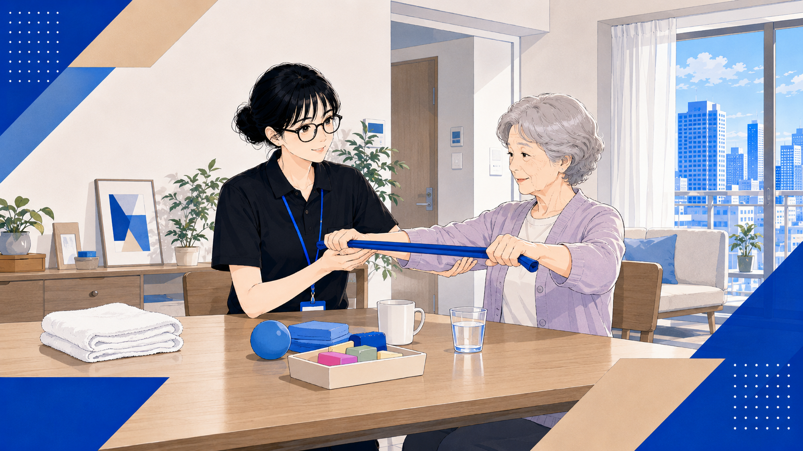
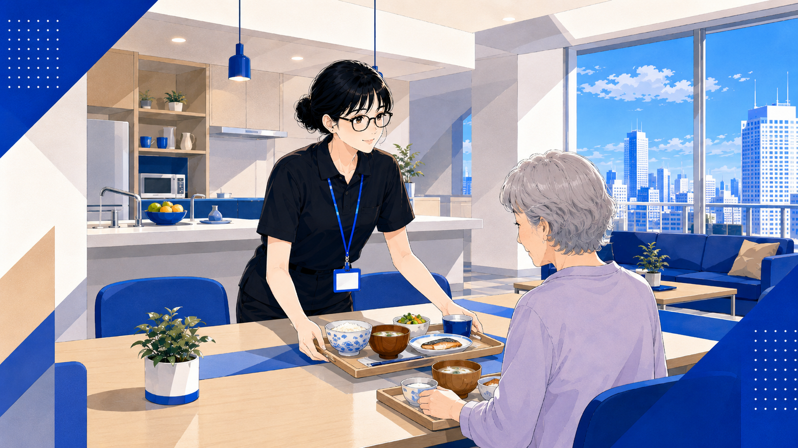

私たちの大切にしていること
私たちはやりがい搾取を嫌悪しています！
私たちは、
ご利用者様が人生の最期まで自分らしく主体的な生活を送れるようにすることを目標にしています。
そういうケアを実践してくれる素晴らしいケアスタッフが、やりがいだけではなく、
正当な経済的リターンを得られないとダメだと考えています。
-
01
ご本人の「やりたい」を、あきらめない
人生の最期まで、ご利用者らしく主体的に生きる。その願いを、私たちはあきらめません。
-
02
やりがいだけでなく、正当な対価を
高いレベルのケアを提供するスタッフが、気持ちだけでなく経済的リターンも得られるしくみをつくっています。
-
03
IT で、時間をつくる
記録や報告に追われない毎日のために、現場目線で IT 化を進めています。「人にしかできないケア」のための時間を、もっと豊かに。
-
04
「育つ」のハードルを低くする
ほとんど全ての介護・看護関連資格の取得費用を全額補助します。MBA研修など、社会人として必要な研修も数多く揃っています。
募集中の職種
介護・看護を中心に、リハビリ、相談員、本部、IT エンジニアまで。
あなたの「やってみたい」を、ここから探してください。

介護スタッフ
特養・グループホーム・デイサービスで、ご利用者の暮らしを支える中核職種。

看護師・准看護師
訪問・施設・日勤・夜勤。医療面から、ご利用者の生活を支える仕事です。
訪問看護
ご自宅に伺い、医療面から日々の健康管理をサポート。医療知識を活かして地域で活躍できます。
訪問介護員 (ヘルパー)
ご自宅で生活援助・身体介護を提供。直行直帰の柔軟な働き方が選べます。

ケアマネジャー
ケアプランの作成と関係者調整。ご利用者主体の支援を実現する役割です。

事務スタッフ
介護報酬請求や採用補助。介護の現場を、裏方から確実に支えます。

IT エンジニア
介護現場の業務効率化を、開発でつくる。介護業界未経験から歓迎します。
夜勤専従（介護・看護）
夜間の見守りとケアを担う専門職。日中とは違うペースで、ご利用者様に寄り添えます。
施設長・管理者候補
施設運営とスタッフマネジメントを担う役割。現場を知るからこそできる経営があります。
総合職（営業・管理職）
提携先との商談やマネジメント業務を担う仕事。介護の現場を、経営・営業の視点から支えます。
相談員
入所前の窓口相談や施設見学のご案内を担当。ご本人・ご家族との最初の接点をつくる仕事です。
サポート職（清掃・洗濯・調理・送迎）
清掃・洗濯・調理・送迎など、施設運営を裏方から支える仕事。介護の資格がなくても始められます。

訪問リハビリ
ご自宅で機能訓練・運動療法を提供。専門知識を活かして在宅生活を支えます。
サービス管理責任者
個別支援計画の作成とスタッフ指導を担う役割。専門性を活かして支援の質を高めます。

世話人
グループホームでご利用者様の日常生活を支える役割。食事や生活相談を通じて寄り添います。
サービス提供責任者
複数のホームヘルパーの訪問計画・スケジュールを調整。現場と利用者様をつなぐ要となる役割です。
新卒・既卒総合職
経験を問わず、幅広い業務にチャレンジできる総合職。入社後の研修でキャリアの土台を築けます。
入社からのキャリアアップモデル
未経験からでも、着実にキャリアを積み重ねられるしくみがあります。
年功ではなく、実践と学びの積み重ねでステップアップします。
-
01
入職 (未経験者)
想定年収帯 301万円〜
-
02
現場リーダー
想定年収帯 365万円〜
-
03
施設長
想定年収帯 450万円〜520万円
-
04
エリアマネジャー
想定年収帯 620万円〜750万円
-
05
ケアサービス本部長
想定年収帯 800万円〜1000万円
-
01
入職 (未経験者)
想定年収帯 400万円〜
-
02
ヘルパーリーダー
想定年収帯 454万円〜
-
03
サービス提供責任者
想定年収帯 540万円〜620万円
-
04
管理者
想定年収帯 620万円〜720万円
-
05
エリアマネジャー
想定年収帯 800万円〜
-
06
ケアサービス本部長
想定年収帯 800万円〜1000万円
※ 想定年収帯は目安イメージです。経験・資格・配属先により異なります。
応募から内定まで、2〜3 週間
採用担当より、一人ひとり丁寧にご案内します。
お急ぎの場合は、ご応募時にお知らせください。
-
エントリー
応募ボタンから、ジョブカン応募フォームにて必要事項をご入力ください。
-
書類選考
3〜5 営業日以内に、書類選考の結果をご連絡いたします。
-
面接
対面またはオンラインで 1〜2 回。現場見学もご希望に応じて。
-
内定・入職
入職日のご相談、入職前研修まで丁寧にサポートします。